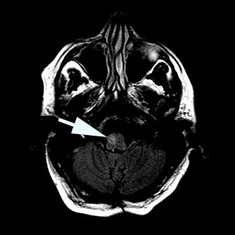
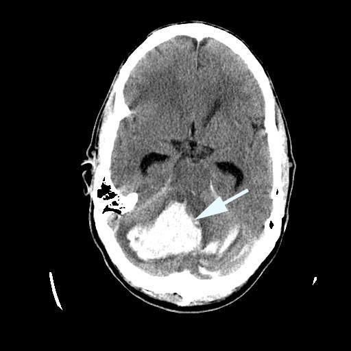

Skew Deviation
- Vertical ocular misalignment as part of an inappropriate ocular tilt reaction caused by a lesion in the brainstem pathway that connects the inner ear (utricle/saccule) to midbrain generators of torsional eye movements
- Common causes: brainstem stroke, hemorrhage, tumor, demyelination
- Uncommon causes: traumatic, neurodegenerative, infectious, toxic, or metabolic disorders
-
Core clinical features
- Vertical diplopia (or blurred vision if the vertical misalignment is small)
- Vertical misalignment that may be of small degree in all gaze positions (“comitant”) or of different degrees (“incomitant”)
- Vertical misalignment that may show a right hypertropia in right gaze and a left hypertropia in left gaze (“alternating skew deviation”)
- Vertical misalignment that may rarely be intermittent (“paroxysmal skew deviation”)
-
Trap: the vertical misalignment may be so small that it escapes detection with the Cover Test, but you can often detect it with the Single Maddox Rod test
-
Tip: the vertical misalignment pattern differs from that of fourth nerve palsy in not obeying the “three-step test” and lacking excyclodeviation in the higher eye (See Isolated Fourth Nerve Palsy )
-
Possible accompanying neurologic features
- Saccadic pursuit
- Gaze paresis
- Nystagmus
- Internuclear ophthalmoplegia
- Ataxia
-
Imaging features
- MRI may or may not show the responsible lesion, which can be very small or very large

- Third nerve palsy
- Fourth nerve palsy
- Myasthenia gravis
- Orbital inflammation, trauma, tumor
- Look for saccadic pursuit, nystagmus, saccadic intrusions, and ataxia as defining accompaniments
-
Tip: if you do not find these accompaniments, question the diagnosis of skew deviation
- Use the Single Maddox Rod Test to detect small vertical misalignments, especially when nystagmus or saccadic intrusions obscure fixational eye movements
- Exclude a misalignment pattern that obeys the “three-step test,” which favors a diagnosis of fourth nerve palsy
- Exclude torsional misalignment with the Double Maddox Rod Test, which favors a diagnosis of fourth nerve palsy
- Order brain MRI